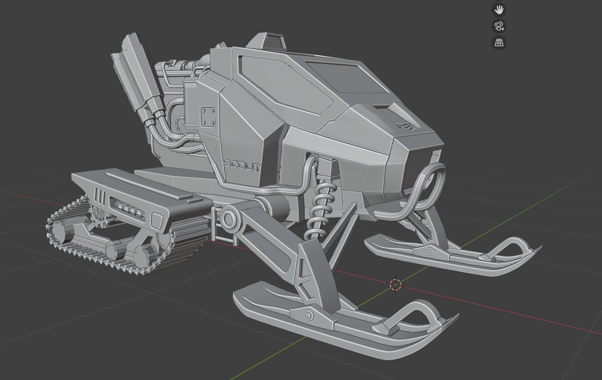

Mistakes & Lessons Learned
Hello again after a while,
I often read about developers who have made just about every possible mistake on their journey. I don't know if my Rebelway course can be considered a mistake, but personally, I see it as one. It taught me to value money more and not fall for "juicy" marketing. Looking ahead, I'm guessing these types of courses will have a really hard time given the rise of AI. No, I don't mean generated content. I mean that anyone with the cognitive ability to learn how to use sophisticated tools, like for 3D modeling, will quickly realize that AI isn't just for checking the weather or generating nonsense. It’s a powerful teacher that never gets tired of a question repeated 10 different ways until it finally "clicks" for you. And it's also here, at least a bit, to facilitate and speed up development in areas we don't consider significant enough to waste time on... I know we might weaken our cognitive skills slightly by doing this, but some mental exercises just aren't worth it.
A few days ago, the YouTube algorithm led me to Patreon, specifically to IGC Clinic, and I have to say that joining their community was definitely not a mistake. On the contrary, it’s like boarding a ship with a warp drive, the things you'd normally figure out gradually over the years are confirmed and expanded upon here. I was even recently captivated by an article on the neurophysiology of creativity, and it looks like I'll have to somewhat revise what I know and start looking at things from a slightly different perspective. It reminds me of a book introduction, I think it was for an anatomical atlas, where the author basically says that the hardest thing, as easy as it may seem, is seeing what is hidden right in front of our eyes.
On a solo journey, your own personal progress is probably the most beautiful part. And it's almost a bit spooky sometimes that you eventually arrive at the same thoughts about dopamine as someone on the other side of the planet.
Anyway, I've made some progress on my prototype. I'm currently working on a 3D model of a Scout unit in Blender, and maybe I'll move on soon and get to visual effects in Houdini. And I swear, I'll probably leave at least the buildings entirely up to Houdini, because I've already spent 14 days on the Scout. And I'm still not done (currently reducing the polycount).

← Back to Devlog Index